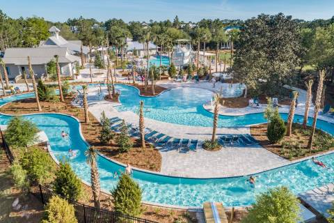

Jude Bradley
"Someone in your life needs to hear that they matter. That they are loved. That they have a future. Be the one to tell them." - Ronnie McNutt
My Early Life

I was born in Palo Alto, California, in the heart of the Silicon valley! I don’t remember it much because my family moved to Nashville, TN when I was one and a half. I remember being a happy kid. I went to an independent school where I made many friends and I loved all my teachers (except for one). I was a gifted student, so school always came easy for me back then. I helped a lot of my friends learn Scratch when we first began the program in third grade. I lived in the same neighborhood with my best friend, and we used to bike around the nearby lake together while we observed the wildlife. Many of my friends and our families traveled together for beach vacation in Florida for fall break and Memorial Day weekend. We often stayed in a town called Watercolor Beach. I lived in Nashville for nearly a decade before moving to California.

My Current Interests
 We moved to San Diego during the COVID-19 pandemic. The move was hard for me because I left all my friends behind and I still haven’t made the kind of close friends I had in Nashville. But I spend a lot of time with my family and my dog, Jasmine. One of our favorite things to do as a family is to travel. Some of my favorite places I have been in the last couple years include Banff, Canada, San Sebastian, Spain, and the Amalfi Coast in Italy. We are planning a trip to Portugal this summer. I have not yet become involved in many extracurricular activities, but I am going to explore a program at UCSD to gain experience in bioengineering.
We moved to San Diego during the COVID-19 pandemic. The move was hard for me because I left all my friends behind and I still haven’t made the kind of close friends I had in Nashville. But I spend a lot of time with my family and my dog, Jasmine. One of our favorite things to do as a family is to travel. Some of my favorite places I have been in the last couple years include Banff, Canada, San Sebastian, Spain, and the Amalfi Coast in Italy. We are planning a trip to Portugal this summer. I have not yet become involved in many extracurricular activities, but I am going to explore a program at UCSD to gain experience in bioengineering.

My dog Jasmine and her best friend Muppet on her birthday

My Future Plans
 Highschool has not been very easy for me. I know I want to go to college, but I have not finalized my decision about what I would like to study there. Many of my family members are doctors. I am interested in medicine, but I also like computers, technology, and robotics, so I am also thinking about biomedical engineering. I have been exploring schools that may be a good fit for my interests, and it seems that UC San Diego and Cal Poly San Luis Obispo both have good biomedical engineering programs. Interesting fact, both of my grandparents on my dad’s side have been professors at UCSD in their careers as research scientists and my grandmother on my mom’s side was a professor at Cal Poly.
Highschool has not been very easy for me. I know I want to go to college, but I have not finalized my decision about what I would like to study there. Many of my family members are doctors. I am interested in medicine, but I also like computers, technology, and robotics, so I am also thinking about biomedical engineering. I have been exploring schools that may be a good fit for my interests, and it seems that UC San Diego and Cal Poly San Luis Obispo both have good biomedical engineering programs. Interesting fact, both of my grandparents on my dad’s side have been professors at UCSD in their careers as research scientists and my grandmother on my mom’s side was a professor at Cal Poly.